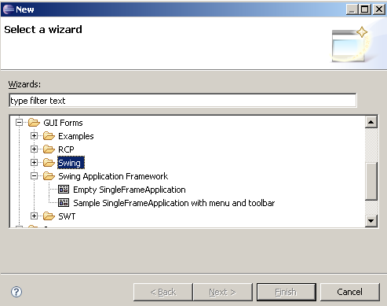
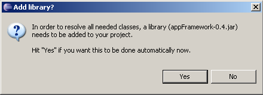
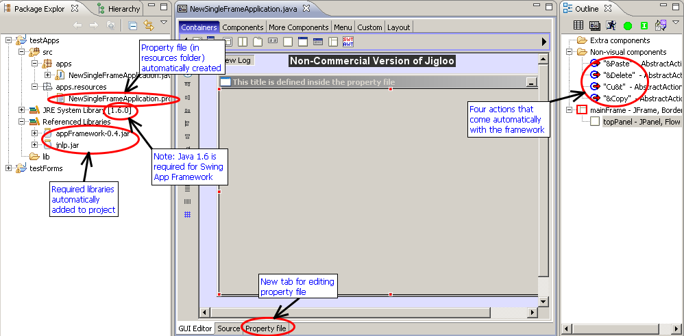
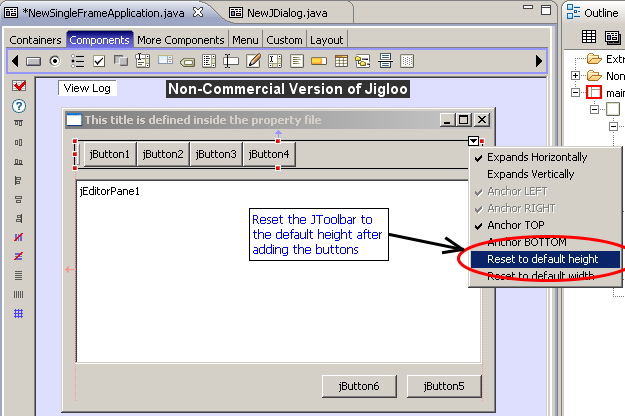
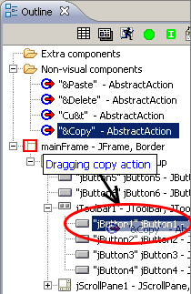
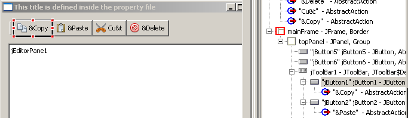
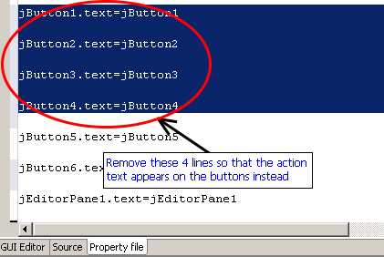
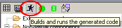

Create new Empty SingleFrameApplication
...again, Ctrl+N will show the
"create" dialog, from which you should select "GUI
forms->Swing Application Framework->Empty SingleFrameApplication"

Before showing the editor Jigloo will offer to add the required jar
files to your project - there are two of them and unless you have a
good reason not to, you should accept - otherwise your classes won't
compile or run.

Choose your editor preferences
Now we've got a Jigloo editor
open, let's change how it looks. Click on the "Open Jigloo preferences
editor" button in the toolbar to the left of the Jigloo editor. The
Eclipse preferences window appears with Jigloo selected. Choose
"Appearance and Behaviour" and then "Tabbed panels". This is useful
when you want to maximize your design area, but "Split-pane" can be
useful if you want to see immediately the connection between code and
GUI.
Now hit "OK" and close and re-open the Jigloo editor (you need to
do this to change to tabbed panels). If your java class does not
immediately re-open in the Jigloo editor, you can ensure that it uses
Jigloo's Form Editor by right-clicking on the class and choosing "Open
with->Form editor".
You should now see something like this:

You can see that
- a properties file has been created with the same name as
the class, in an associated resources folder. This file exteralizes
String, Font and Color properties allowing the language and look of an
application to be changed easily.
- You can also see a "Properties file" tab at the bottom of
the Jigloo editor which will allow you to manually edit the properties
file.
- Four actions (which are part of the framework) appear
under the "Non-visual components" node. Though more actions are easily
added, these are basic ones that are ready for use.
Set layout to GroupLayout
You can either select the
GroupLayout icon in the "layout" palette, or right-click on the JFrame
and select "Set Layout->GroupLayout"
Add toolbar, editor pane and
buttons
Add a JToolbar to the top-left
of the main form and drag it across to the right side - you should
notice that it is now anchored to both sides of the form (ie it expands
horizontally).
Now add four JButtons to the toolbar - you can hold down CTRL+SHIFT
after adding the first button to quickly add the other three.
Now add two buttons to the bottom right of the form.
Then add a JScrollPane under the toolbar and stretch it across the form
and between the toolbar and bottom buttons.
Finally, add a JEditorPane to the JScrollPane, and reset the toolbar to
it's default height.
You should have something like this:

Associate the pre-made actions
with the toolbar buttons
Locate the "Copy" action in the
outline tree view, then drag it and drop it on jButton1

Do the same with the other three actions and the other three buttons.
You should see the following:

In order for the actions to function properly they must not be
focusable, so select all four buttons and set their "focusable"
property (probably in the "Expert" property category) to "false".
Now, although the buttons look OK in the editor, we need to stop the
button text overwriting the action's text.
So open up the property file editor (tab on the bottom of the Jigloo
editor) and remove the four lines that set the text properties of the
four buttons.

Also, since we are here, edit the "mainFrame.title" property to say
something like "A test text editor".
Now go back to the "GUI Editor" tab and notice how the form is
re-parsed and re-generated after editing the properties file, and now
shows a different title.
If you like, you could run the application now and see how the buttons
work with the JEditorPane - when it has the focus.
